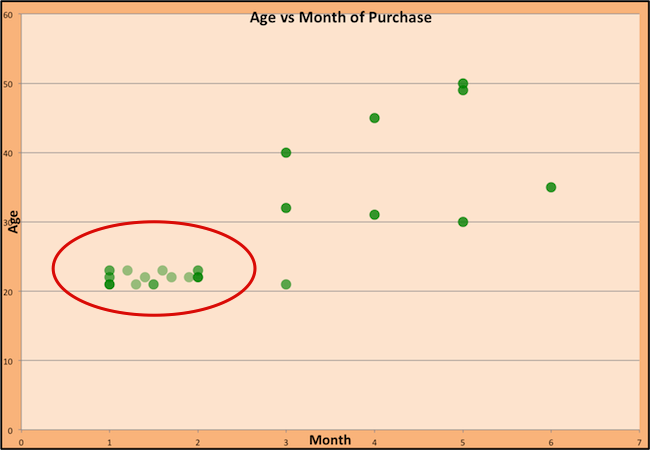
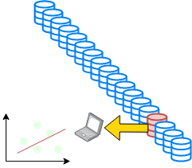
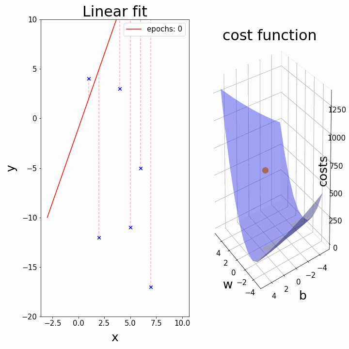

Introduction to Machine Learning
Data-Based Economics
Regressions
What is machine learning?
What is Machine learning?
Definition Candidates:
Arthur Samuel: Field of study that gives computers the ability to learn without being explicitly programmed
Tom Mitchell: A computer program is said to learn from experience E with respect to some class of tasks T and performance measure P if its performance at tasks in T, as measured by P, improves with experience E.
What about artificial intelligence ?
- AIs
- think and learn
- mimmic human cognition

Econometrics vs Machine Learning
- Econometrics is essentially a subfield of machine learning with a different jargon and a focus on:
- studying properties and validity of results
- data is scarce
- inference
- singling out effects of specific explanatory variables
- establishing causality
- studying properties and validity of results
- Machine learning:
- structure data
- make predictions (interpolate data)
Big Data
Data types
- structured:
- tabular
- long
- wide
- tabular
- unstructured:
- files
- networks
- text, mails
- images, sound
Tabular Data
Networks
- Banking networks
- Production network
Big Data
- Big data:
- wide data (K>>N)
- long data (N>>K)
- heterogenous, unstructured data
- Might not even fit in memory
- out of core computations
- learn from a subset of the data
Machine Learning Tasks
Big Subfields of Machine Learning
- Traditional classification
- supervised (labelled data)
- regression: predict quantity
- classification: predict index (categorical variable)
- unsupervised (no labels)
- dimension reduction
- clustering
- semi-supervised / self-supervised
- reinforcement learning
- supervised (labelled data)
- Bazillions of different algorithms: https://scikit-learn.org/stable/user_guide.html
- regression:
- Predict: \(y = f(x; \theta)\)
| Age | Activity | Salary |
|---|---|---|
| 23 | Explorer | 1200 |
| 40 | Mortician | 2000 |
| 45 | Mortician | 2500 |
| 33 | Movie Star | 3000 |
| 35 | Explorer | ??? |
- supervised: classification
- Output is discrete
- Regular trick: \(\sigma(f(x; \theta))\) where \(\sigma(x)=\frac{1}{1-e^{-x}}\)
| Age | Salary | Activity |
|---|---|---|
| 23 | 1200 | Explorer |
| 40 | 2000 | Mortician |
| 45 | 2500 | Mortician |
| 33 | 3000 | Movie Star |
| 35 | 3000 | ??? |
unsupervised
- organize data without labels
- dimension reduction: describe data with less parameters
- clustering: sort data into “similar groups” (exemple)
| Age | Salary | Activity |
|---|---|---|
| 23 | 1200 | Explorer |
| 40 | 2000 | Mortician |
| 45 | 2500 | Mortician |
| 33 | 3000 | Movie Star |
| 35 | 3000 | Explorer |
unsupervised: clustering

unsupervised: clustering
Women buying dresses during the year:

Difference with traditional regression
\[\underbrace{y}_{\text{explained variable}} = a \underbrace{x}_{\text{explanatory variable}} + b\]
Difference with traditional regression
\[\underbrace{y}_{\text{labels}} = a \underbrace{x}_{\text{features}} + b\]
| Econometrics | Machine learning |
|---|---|
| Regressand / independent variable / explanatory variable | Features |
| Regressor / dependent variable / explained variable | Labels |
| Regression | Model Training |
Difference with traditional regression
- Big data requires other means to process the data:
- data is long: so many observations \(x\) doesn’t fit in the memory
- need to use incremental training method to use only a subsample at a time
- data is wide: so many features, the model is crudely overspecified
- need to build dimension reduction into the objective
- data is nonlinear:
- use nonlinear model (and nonlinear training)
- data is not a simple vector…
- same as nonlinear
- data is long: so many observations \(x\) doesn’t fit in the memory
Regression with long data
Long data

- Modern society is gathering a lot of data.
- in doesn’t fit in the computer memory so we can’t run a basic regression
- In some cases we would also like to update our model continuously:
- incremental regression
We need a way to fit a model on a subset of the data at a time.
Long data
- Traditional regression:
- full sample \(X,Y=(x_i,y_i)_{i=1:N}\)
- OLS: \(\min_{a,b} \sum_{i=1}^N (a x_i + b - y_i)^2\)
- closed-form solution: \(a = X^{\prime}X Y\) and \(b= ...\)
- hard to compute if \(X\) is very big
- Incremental learning:
- given initial \(a_n\), \(b_n\)
- pick \(N\) random observations (the batch)
- regress them to get new estimate \(a\), \(b\)
- this minimizes the square of errors
- update with learning rate \(\beta\):
- \(a_{n+1} \leftarrow a_n (1-\beta_n) + \beta_n a\)
- \(b_{n+1} \leftarrow b_n (1-\beta_n) + \beta_n b\)
- process is not biased (that is \(a\) converges to the true value) as long as one decreases \(\beta\) sufficiently fast over time (ex: \(\beta_n=\frac{1}{n}\))
Formalisation: a typical machine learning task
- vector of unknowns: \(\theta=(a,b)\)
- dataset \(X,Y=(x_i,y_i)_{i=1:N}\)
- for a random draw \(\omega = (a_{\sigma(i)}, b_{\sigma(i)})_{i=[1,N]} \subset (X,Y)\)
- \(\omega\) is just a random batch of size \(N\)
- define the empirical risk (or empirical cost) \[\xi(\theta, \omega) = \sum_{(x,y) \in \omega} (y - (a x + b))^2\]
- we want to minimize theoretical risk: \[\Xi(\theta) = \mathbb{E} \left[ \xi(\theta, \omega)\right]\]
Training: Gradient Descent
How do we minimize a function \(f(a,b)\)?
Gradient descent:
- \(a_k, b_k\) given
- compute the gradient (slope) \(\nabla_{a,b} f = \begin{bmatrix} \frac{\partial f}{\partial a} \\\\ \frac{\partial f}{\partial b}\end{bmatrix}\)
- follow the steepest slope: (Newton Algorithm)
- \[ \begin{bmatrix} a_{k+1} \\\\ b_{k+1} \end{bmatrix} \leftarrow \begin{bmatrix} a_k \\\\ b_k \end{bmatrix} - \nabla_{a,b} f\]
- but not too fast: use learning rate \(\lambda\): \[ \begin{bmatrix} a_{k+1} \\\\ b_{k+1} \end{bmatrix} \leftarrow (1-\lambda) \begin{bmatrix} a_k \\\\ b_k \end{bmatrix} + \lambda (- \nabla_{a,b} f )\]

Not everything goes wrong all the time


- In practice, choosing the right learning rate \(\lambda\) is crucial
- \(\lambda\) is a metaparameter of the model training.
Regression with wide data
Wide data
Problem: - with many independent variables \(x_1, ... x_K\), \(K>>N\) and one dependent variable \(y\) the regression \[y = a_1 x_1 + a_2 x_2 + \cdots + a_N x_N + b\] is grossly overidentified.
Wide data regression
- Main Idea: penalize non-zero coefficients to encourage scarcity
- Ridge: \[\Xi(a,b) = \min_{a,b} \sum_{i=1}^N ( \sum_j a_j x_j + b - y_i)^2 + \mu \sum_i |a_i|^2\]
- shrinks parameters towards zero
- closed form
- Lasso: \[\Xi(a,b) = \min_{a,b} \sum_{i=1}^N (\sum_j a_j x_j + b - y_i)^2 + \mu \sum_i |a_i|\]
- eliminates zero coefficients
- Elastic: Ridge + Lasso
- Ridge: \[\Xi(a,b) = \min_{a,b} \sum_{i=1}^N ( \sum_j a_j x_j + b - y_i)^2 + \mu \sum_i |a_i|^2\]
- Remarks:
- \(\mu\) is called a regularization term.
- it is a hyperparameter
- \(\mu \uparrow\), bias increases, variance decreases
Training
To perform Lasso and ridge regression:
- AI approach:
- minimize objective \(\Xi(a,b)\) directly.
- approach is known as (stochastic) Gradient Descent
- Use special algorithms
Example: IMF challenge
- An internal IMF challenge to predict crises in countries
- Lots of different approaches
- Lots of data:
- which one is relevant
- machine must select relevant informations
- Example: Lasso Regressions and Forecasting Models in Applied Stress Testing by Jorge A. Chan-Lau
- in a given developing country
- tries to predict probability of default in various sectors
Nonlinear Regression
Nonlinear Regression
- So far, we have assumed,
- \(y_i = a + b x_i\)
- \(y_i = a + b x_i + μ_1 (a^2 + b^2) + μ_2 (|a| + |b|)\)
- defined \(\Xi(a,b)\) and tried to minimize it
- Same approach works for fully nonlinear models
- \(y_i = a x_i + a^2 x_i^2 + c\)
- \(y_i = \varphi(x; \theta)\) ()
- Special case: neural network:
- primer tensor playground
Model validation
how to evaluate the machine learning
In machine learning we can’t perform statistical inference easily. How do we assess the validity of a model?
- Basic idea (independent of how complex the algorithm is)
- separate data in
- training set (in-sample)
- test set (out of sample)
- train using only the training set
- evaluate performance on the test set
- separate data in
- Performance can be:
- fitness, number of classification errors (false positive, false negative)
how to evaluate the machine learning
In case the training method depends itself on many parameters (the hyperparameters) we make three samples instead:
- training set (in-sample)
- validation set (to update hyperparameters)
- test set (out of sample)
Golden Rule: the test set should not be used to estimate the model, and should not affect the choice any training parameter (hyperparameter).

The test set reveals that orange model is overfitting.
How to choose the validation set?
- Holdout validation approach:
- keeps x% of the data for the training, (100-x)% for the test
- How to choose the sizes of the subsets?
- small dataset: 90-10
- big data set: 70-30 (we can afford to waste more training data for the test)
- Problem:
- are we sure the validation size is correct? Are the results determined by an (un-) lucky draw?
- a problem for smaller datasets
How to choose the validation set?
A more robust solution: \(k\)-fold validation
- split dataset randomly in \(K\) subsets of equal size \(S_1, ... S_K\)
- use subset \(S_i\) as test set, the rest as training set, compute the score
- compare the scores obtained for all \(i\in[1,K]\)
- they should be similar (compute standard deviation)
- average them

How to use sklearn for regressions
Wait
Another library to do regression ?
statsmodels:- explanatory analysis
- statistical tests
- formula interface for many estimation algorithms
- stateless approach (
model.fit()returns another object)
- stateless approach (
linearmodels- extends
statsmodels(very similar interface)- (panel models, IV, systems…)
- extends
sklearn:- prediction
- faster for big datasets
- common interface for several machine learning tasks
- stateful approach (model is modified by
.fitoperation)
- stateful approach (model is modified by
- defacto standard for machine learning
In practice
Basic sklearn workflow:
- import data
- features: a matrix X (2d numpy array)
- labels: a vector y (1d numpy array)
- split the data, between training and test datasets
- split needs to be random to avoid any bias
- normalize the data
- most ML algorithm are sensitive to scale
- create a model (independent from data)
- train the model on training dataset
- evaluate accuracy on test dataset (here \(R^2\))
- use the model to make predictions
The workflow is always the same, no matter what the model is
- try
sklearn.linear_model.Lassoinstead ofLinearRegression
from sklearn.datasets import load_diabetes
dataset = load_diabetes()
X = dataset['data']
y = dataset['target']
from sklearn.model_selection import train_test_split
X_train, X_test, y_train, y_test = train_test_split(X,y, test_size=0.1)
#Feature Scaling
from sklearn.preprocessing import StandardScaler
sc = StandardScaler()
X_train = sc.fit_transform(X_train)
X_test = sc.transform(X_test)
from sklearn.linear_model import LinearRegression
model = LinearRegression()
model.fit(X_train, y_train)
model.score(X_test, y_test)
model.predict(X_new)\(k\)-fold validation with sklearn
from sklearn.model_selection import KFold
kf = KFold(n_splits=10)
for train_index, test_index in kf.split(X):
X_train, X_test = X[train_index], X[test_index]
y_train, y_test = y[train_index], y[test_index]
## train a model in X_train, y_train
## test it on X_test, y_test